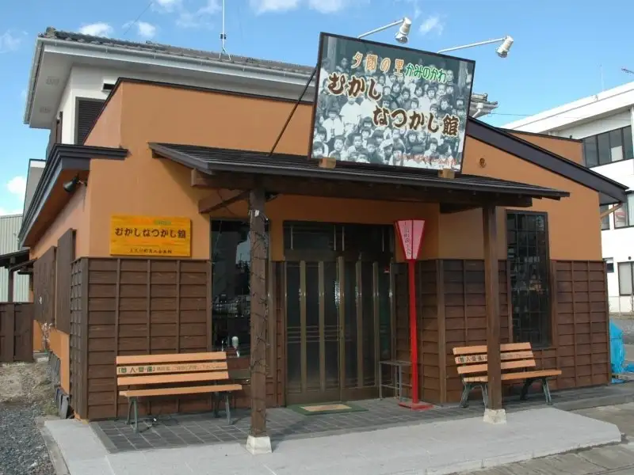
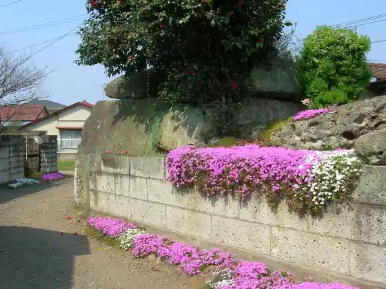
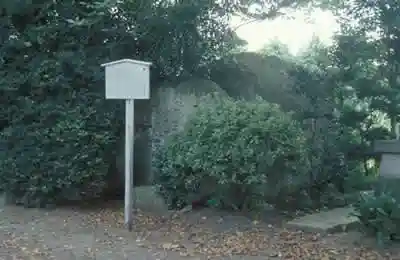

Kaminokawa
Kaminokawa · Tochigi
Kaminokawa
Highlighted on the Tochigi map.

Sights
Mukashinatsukashi Kan
Kabuto Tsuka Burial Mound

Atago Jinja Burial Mound

Enmei In
Miyaoka Hashi
Ken'o Joka Center
Kensho Tera
Kaminokawa Shichifukujin Meguri
Nagaizumi Tera